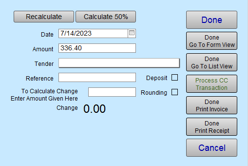
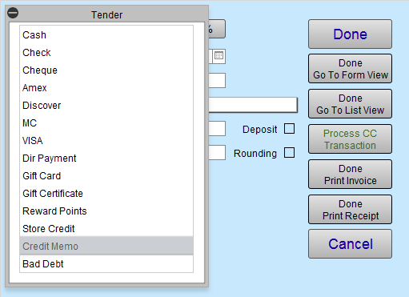

Refund a Deposit Invoice and Reclaim Taxes
A customer comes in to cancel a Work Order, or return a Product, for which they have made a partial payment (deposit) on an Invoice. The following steps allow you to zero out the old Invoice, issue a refund, and reclaim the taxes paid.
Before You Begin...
When the Invoice falls within the previous month (i.e. you have paid the taxes on this sale), then do the following:
-
Locate the customer's old Invoice and confirm the partial payment.
-
Enter a Payment (choose Credit Memo as the Tender type) for the deposit amount. The Invoice must have a zero balance.
The Credit Memo clears the deposit from your Accounts Receivable (otherwise it never goes away). -
Create a new Invoice for the customer and add the returned items but use negative quantities, e.g. -1 .
-
Take two payments:
The first payment, e.g. Refund - Cash, to refund the customer.
The second payment (choose Credit Memo as the Tender type) to zero out the Invoice.
This allows you to reclaim your taxes on this day.
How to Issue a Refund on an old Deposit Invoice & Reclaim the Taxes
1. Take a Credit Memo Payment on the Old Invoice to Zero it Out
We start by making changes to the original Invoice.
-
Locate the customer’s Invoice.
-
In form view, click the purple Data Entry button.

The Line Item Entry screen appears.
If you are refunding through FrameReady’s credit card interface, then copy down the Reference number of the original payment as it appears in the Reference field. -
Click the Enter A Payment button (lower left corner).

-
The Receipts window appears; the Amount owing is automatically entered.

-
In the Tender field, select Credit Memo .
If you do not see it in the list, then see: Edit Value Lists

-
Click the Done Go To Form View button.
The full amount of the Invoice is Paid in Full, with a Credit Memo, and the balance is now zero. -
Take note of the Invoice number, customer name and item(s) sold on this old Invoice. Or, print the Invoice, as you will be entering them onto the new Invoice to reclaim the taxes and zero out the Credit Memo.
2. Create a New Invoice and Reclaim the Taxes
Next, we are going to create a new invoice to reclaim the taxes you have already paid.
-
Click the New Invoice button.
-
Enter Customer Information.
-
Use the magnifying glass (or purple search button) to enter the Product or Work Order number so that the item(s) appear on this new Invoice, the same as they appeared on the old Invoice.
-
In the Qty field, enter the negative value, e.g. -1 , -2 , -3 , etc. for the applicable item(s) being refunded.
The Subtotal and Price appear, in red, as negative numbers.
(If this is a retail product and the number is still in the Products file, the inventory for the item is increased to show the return of the item. If it is a Work Order, then inventory is not affected.) -
Now issue the refund to your customer:
Click the Enter A Payment button.
The Receipts window appears; the Amount field contains the negative total amount. This number should match exactly to the amount of the Credit Memo on the old Invoice.
If necessary, adjust the number in the Amount field to the negative dollar value of the refund you are issuing (the same amount as their payment on the old Invoice but negative). -
In the Tender field, select the appropriate Refund item, e.g. Refund - VISA
If using FrameReady’s credit card interface, then also enter the Reference number from the original transaction into the Reference field. Then click the Process CC Transaction button. -
Click Done.
-
Next, we need to zero out the Invoice:
Click the Enter A Payment button again.
The Receipts window appears with the balance owed in the Amount field as a negative amount. This number should match exactly to the amount of the Credit Memo on the old Invoice. -
In the Tender field, select Credit Memo .
-
Click Done Go To Form View.
-
You may need to enter the name of the sales rep if your program is not set up to automatically enter a name.
-
In the Invoice Note field (lower left corner), enter a brief explanation of the return and identify the original invoice number.
At year end, this will save you time explaining to your accountant or an auditor; e.g. Created invoice to correct canceled order on invoice #100461. -
Go back to the original Invoice and enter a similar note identifying the number of the new Invoice created to reclaim the taxes.
In Summary
-
This generates a tax credit for you on today’s sales.
-
You now have two Invoices for the same customer; both with a zero balance.
-
On your Sales Report, you will notice the taxes for the Invoice are a negative which reclaims the amount of taxes paid. Both the monthly Sales Report and the End of Day Sales Report will look the same.
-
In the Payment Report showing your Receipts for the day, you will see the tender, Credit Memo, listed with the same amount of money being paid and removed so that the total is zero.
© 2023 Adatasol, Inc.